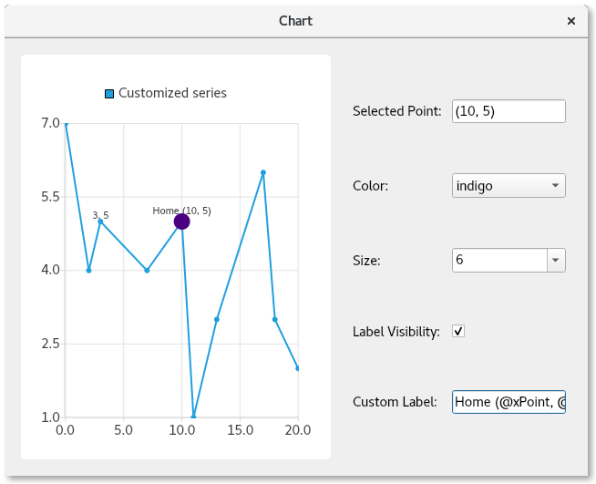

Selected Point Configuration
Note: This is part of the Charts with Widgets Gallery example.

Features Demonstrated
Here you will learn how to:
- Provide click-selection of points in a series.
- Override the individual configuration of specific points, configuring:
- Color
- Size
- Visibility of the label
- Text format of the label
Running the Example
To run the example from Qt Creator, open the Welcome mode and select the example from Examples. For more information, visit Building and Running an Example.
Subclass QMainWindow
We start by creating a subclass of QMainWindow that will contain the chart and controls. And we provide the boilerplate for the constructor implementation:
PointConfigurationWidget::PointConfigurationWidget(QWidget *parent) : ContentWidget(parent) {
Create a Line Series
Then we create a QLineSeries, giving it a name, making the points visible, and giving it some points to plot.
m_series = new QLineSeries; m_series->setPointsVisible(true); m_series->append({QPointF(0, 7), QPointF(2, 4), QPointF(3, 5), QPointF(7, 4), QPointF(10, 5), QPointF(11, 1), QPointF(13, 3), QPointF(17, 6), QPointF(18, 3), QPointF(20, 2)});
Create the Point Configuration Controls
Now we create some controls to configure the color, size, label visibility, and the label itself. We create an associated label for each control so the user knows what the control does.
For the color and size, we use a QComboBox, populating it with a variety of color and size choices.
Next we create the final two controls. A Checkbox controls the visibility of the selected point. The other control is a QLineEdit allowing the user to provide a custom label for the point.
Note that we do not set initial values for any of the controls, as a point will always be selected showing its current settings.
auto selectedPointIndexLabel = new QLabel(tr("Selected Point: "), this); m_selectedPointIndexLineEdit = new QLineEdit(this); m_selectedPointIndexLineEdit->setReadOnly(true); auto colorLabel = new QLabel(tr("Color: "), this); m_colorCombobox = new QComboBox(this); QStringList colorStrings = {"red", "orange", "yellow", "green", "blue", "indigo", "violet", "black"}; QStringList trColorStrings = {tr("red"), tr("orange"), tr("yellow"), tr("green"), tr("blue"), tr("indigo"), tr("violet"), tr("black")}; for (int i = 0; i < colorStrings.size(); i++) m_colorCombobox->addItem(QIcon(), trColorStrings[i], QColor(colorStrings[i])); auto sizeLabel = new QLabel(tr("Size: "), this); m_sizeCombobox = new QComboBox(this); for (auto size : { 2, 3, 4, 6, 8, 10, 12, 15 }) m_sizeCombobox->addItem(QIcon(), QString::number(size), size); auto labelVisibilityLabel = new QLabel(tr("Label Visibility: "), this); m_labelVisibilityCheckbox = new QCheckBox(this); auto customLabelLabel = new QLabel(tr("Custom Label: "), this); m_customLabelLineEdit = new QLineEdit(this);
Populate the Controls upon Selecting a Point
Now that we have the controls, we need to provide the logic that sets the current control values for the selected point. Note that the whole series value is used if there is no customization for a selected point. In this case, if the series is set to show blue points, a blue color value will be shown in the color combobox.
Upon clicking on the lineseries, we look up the point clicked on, remove the prior point selection, and then select the point that was clicked on. This visually indicates the selected point on the chart - making the point larger to indicate its selection. The index of the current selected point and its PointConfigurations are saved to a member variable for later use.
The PointConfigurations are queried and matching values in the comboboxes are looked up. Then the current indices of the comboboxes are set accordingly. Similarly for the checkbox and line edit, the values are looked up from the PointConfigurations, and the controls are set to match them.
QObject::connect(m_series, &QXYSeries::clicked, m_series, [&](const QPointF &point) { int index = m_series->points().indexOf(point.toPoint()); if (index != -1) { m_series->deselectAllPoints(); m_series->selectPoint(index); m_selectedPointIndex = index; m_selectedPointConfig = m_series->pointConfiguration(index); const QPointF selectedPoint(m_series->at(index)); m_selectedPointIndexLineEdit->setText("(" + QString::number(selectedPoint.x()) + ", " + QString::number(selectedPoint.y()) + ")"); PointConfigurations config = m_series->pointConfiguration(index); QVariant colorVar = config[QXYSeries::PointConfiguration::Color]; QColor color = colorVar.isValid() ? colorVar.value<QColor>() : m_series->color(); if (m_colorCombobox->findData(color) < 0) m_colorCombobox->addItem(color.name(), color); m_colorCombobox->setCurrentIndex(m_colorCombobox->findData(color)); QVariant sizeVar = config[QXYSeries::PointConfiguration::Size]; qreal size = sizeVar.isValid() ? sizeVar.toReal() : m_series->markerSize(); if (m_sizeCombobox->findData(size) < 0) m_sizeCombobox->addItem(QString::number(size), size); m_sizeCombobox->setCurrentIndex(m_sizeCombobox->findData(size)); QVariant labelVisibilityVar = config[QXYSeries::PointConfiguration::LabelVisibility]; bool labelVisibility = labelVisibilityVar.isValid() ? labelVisibilityVar.toBool() : m_series->pointLabelsVisible(); m_labelVisibilityCheckbox->setChecked(labelVisibility); QVariant customLabelVar = config[QXYSeries::PointConfiguration::LabelFormat]; QString customLabel = customLabelVar.isValid() ? customLabelVar.toString() : ""; m_customLabelLineEdit->setText(customLabel); } });
Provide the Logic to Configure the Selected Point
Now that the controls are populated with the current configuration, we need to make them do something. We connect up their signals to logic that will do the work of configuring the selected point with the setting chosen. It is a simple matter of setting the QXYSeries::PointConfiguration value associated with the control to the m_selectedPointConfig PointConfigurations member variable, and calling QXYSeries::setPointConfiguration.
QObject::connect(m_colorCombobox, &QComboBox::activated, m_series, [&](const int) { m_selectedPointConfig[QXYSeries::PointConfiguration::Color] = m_colorCombobox->currentData(); m_series->setPointConfiguration(m_selectedPointIndex, m_selectedPointConfig); }); QObject::connect(m_sizeCombobox, &QComboBox::activated, m_series, [&](const int) { m_selectedPointConfig[QXYSeries::PointConfiguration::Size] = m_sizeCombobox->currentData(); m_series->setPointConfiguration(m_selectedPointIndex, m_selectedPointConfig); }); QObject::connect(m_labelVisibilityCheckbox, &QAbstractButton::clicked, m_series, [&](const bool checked) { m_selectedPointConfig[QXYSeries::PointConfiguration::LabelVisibility] = checked; m_series->setPointConfiguration(m_selectedPointIndex, m_selectedPointConfig); }); QObject::connect(m_customLabelLineEdit, &QLineEdit::editingFinished, m_series, [&]() { m_selectedPointConfig[QXYSeries::PointConfiguration::LabelFormat] = m_customLabelLineEdit->text(); m_series->setPointConfiguration(m_selectedPointIndex, m_selectedPointConfig); });
Create the Chart and Lay out the Controls
Finally we create the chart and its view, add the series to the chart, and create the layout of the window. As part of this, we connect to the geometryChanged signal to catch a signal when the chart is first painted. This is so that we can get correct values for the initially selected point. If we do this earlier, the point values are incorrect. This connection is disconnected after the first time that it is fired.
auto chart = new QChart; chart->addSeries(m_series); chart->createDefaultAxes(); chart->setTitle("Select points with mouse click"); chart->layout()->setContentsMargins(0, 0, 0, 0); chart->legend()->setVisible(false); m_selectInitialPointConnection = QObject::connect(chart, &QChart::geometryChanged, chart, [&]() { m_series->selectPoint(4); m_series->clicked(m_series->at(m_series->selectedPoints()[0])); disconnect(m_selectInitialPointConnection); }); auto chartView = new QChartView(chart, this); chartView->setRenderHint(QPainter::Antialiasing); auto controlWidget = new QWidget(this); auto controlLayout = new QGridLayout(controlWidget); controlLayout->setColumnStretch(1, 1); controlLayout->addWidget(selectedPointIndexLabel, 0, 0); controlLayout->addWidget(m_selectedPointIndexLineEdit, 0, 1); controlLayout->addWidget(colorLabel, 1, 0); controlLayout->addWidget(m_colorCombobox, 1, 1); controlLayout->addWidget(sizeLabel, 2, 0); controlLayout->addWidget(m_sizeCombobox, 2, 1); controlLayout->addWidget(labelVisibilityLabel, 3, 0); controlLayout->addWidget(m_labelVisibilityCheckbox, 3, 1, 1, 2); controlLayout->addWidget(customLabelLabel, 4, 0); controlLayout->addWidget(m_customLabelLineEdit, 4, 1); auto mainLayout = new QHBoxLayout(this); mainLayout->addWidget(chartView); mainLayout->setStretch(0, 1); mainLayout->addWidget(controlWidget);
Now we have a fully functioning application that demonstrates how to customize individual chart points.